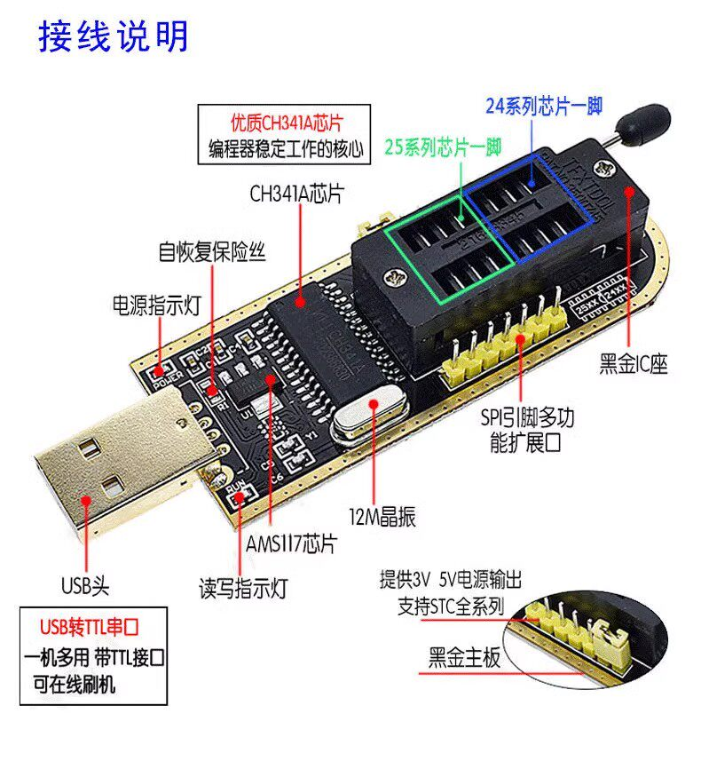
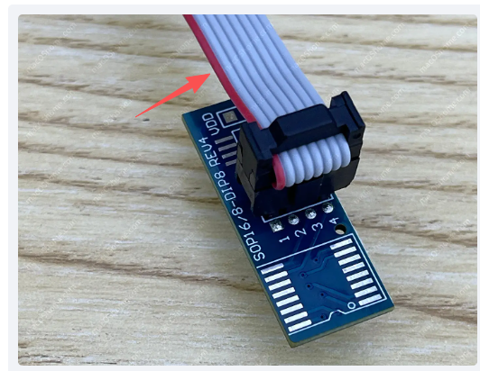
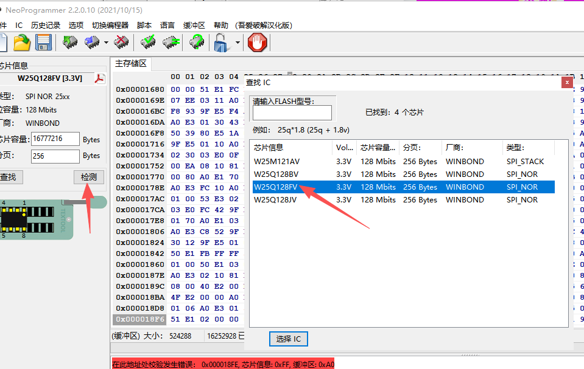
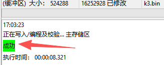

ch341a编程器使用
一：硬件部分
首先确定本次要刷的芯片是属于24还是25的，ch341插座分为24和25部分

本次刷的是W25Q128FVSG，属于（25Q128FV 系列）的 SPI NOR Flash 芯片，所以是插下半部的25部位
然后确定芯片电压，ch341通过跳线控制，黄色帽短接1,2提供3.3v；短接2，3提供5v，千万不要接错
我没有买专用的插座（穷），是直接用夹子接芯片刷的，夹子接的话，会导致芯片引脚变形，刷完后要自己手动掰正。。

夹子线的红线是对应芯片的原点1脚，不要夹错
二：软件部分
夹好之后，直接把ch341a通过usb接口插电脑，然后打开NeoProgrammer开始刷，如果是初次的话，需要Windows设备管理器硬件那里添加好驱动（NeoProgrammer文件夹里面有驱动文件）
操作流程（通用）：
-
插入编程器 → 打开软件 → 点击检测

-
选择芯片型号：W25Q128FV（后面的SG 是指封装工艺，FV是基础系列，所以选择FV就行，注意型号一定要搞错，对应自己购买的具体型号！）
-
先 Detect / 读取 ID 确认识别正确（如无需4这步也可以省略）。
-
Read 全片备份（不是重要芯片这步可以省略）。
-
“文件——打开自己下载好需要刷的bin文件”——“擦除”——“写入/编程 IC”

如果写入失败，表示没夹紧，拔掉重新夹紧后重复上面步骤直到成功为止
一切搞定之后，拔出ch341a，然后松开夹子即可